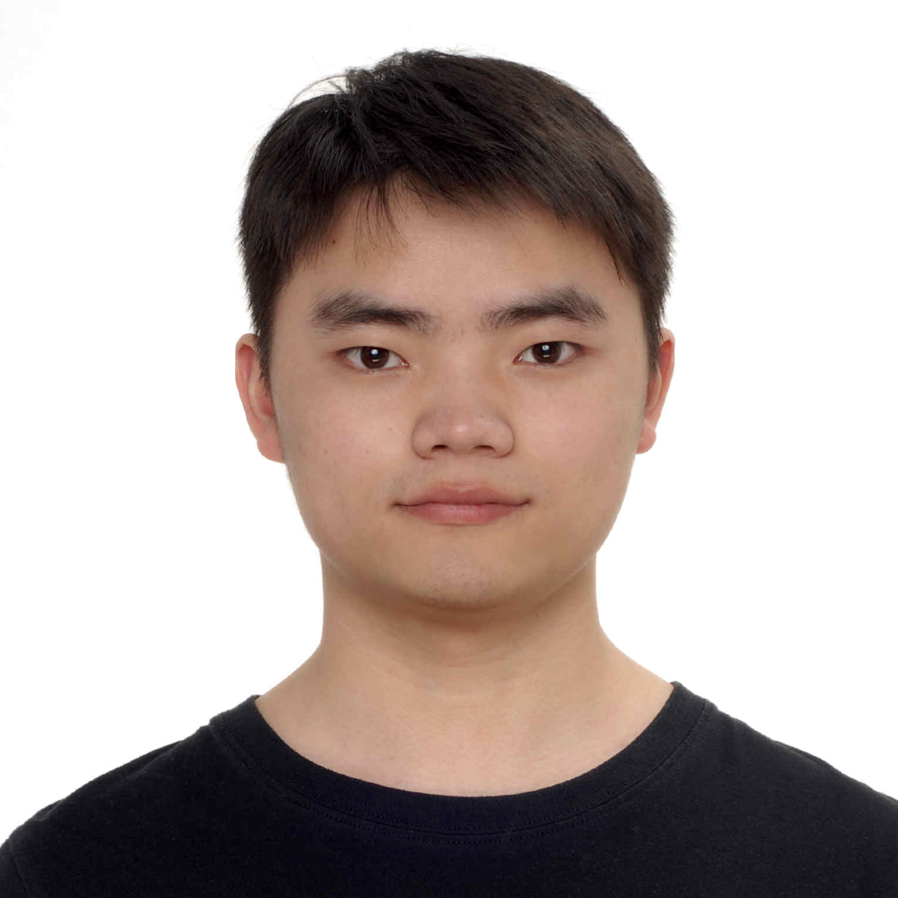

Yaoyao Ding
Electrical and Computer Engineering, University of Toronto
yaoyao.ding@mail.utoronto.ca
GitHub
I am currently a master student at University of Toronto, supervised by Professor Gennady Pekhimenko. Before coming to UofT, I received my bachelor degree in Computer Science from the ACM Honors Class supervised by Yong Yu at Shanghai Jiao Tong University.
My research interests lie in the general area of systems for machine learning. Currently, I am focusing on the optimization for neural network training and inference.
Publications
Experiences
-
EcoSystem Lab, University of Toronto.
2020.09 - Present
Research Assistant, supervised by Prof. Gennady Pekhimenko.
-
HAN Lab, Massachusetts Institute of Technology.
2019.07 - 2019.12
Research Assistant, supervised by Prof. Song Han.
-
Apex Lab, Shanghai Jiao Tong University.
2018.09 - 2019.06
Research Assistant, supervised by Prof. Yong Yu and Prof. Weinan Zhang.
Awards
- Zhiyuan Honor Degree of Bachelor in Computer Science and Technology2020
- Liao Kaiyuan Scholarship (Top 0.2% in SJTU)2019
- Rong Chang Innovation Scholarship Finalist (Top 0.03% in SJTU)2018
- Zhiyaun Honors Scholarship (Top 5% in SJTU)2017 & 2018
- ACM-ICPC Qingdao Asia Regional Contest (Gold Medal Top 2% over 300 teams)2017
- ACM-ICPC Jakarta Asia Regional Contest (4th Place over 80 teams)2017
- CCPC Harbin Regional Contest (Gold Medal Top 6% over 180 teams)2017
- CCPC Hefei Regional Contest (Gold Medal Top 12% over 150 teams)2016